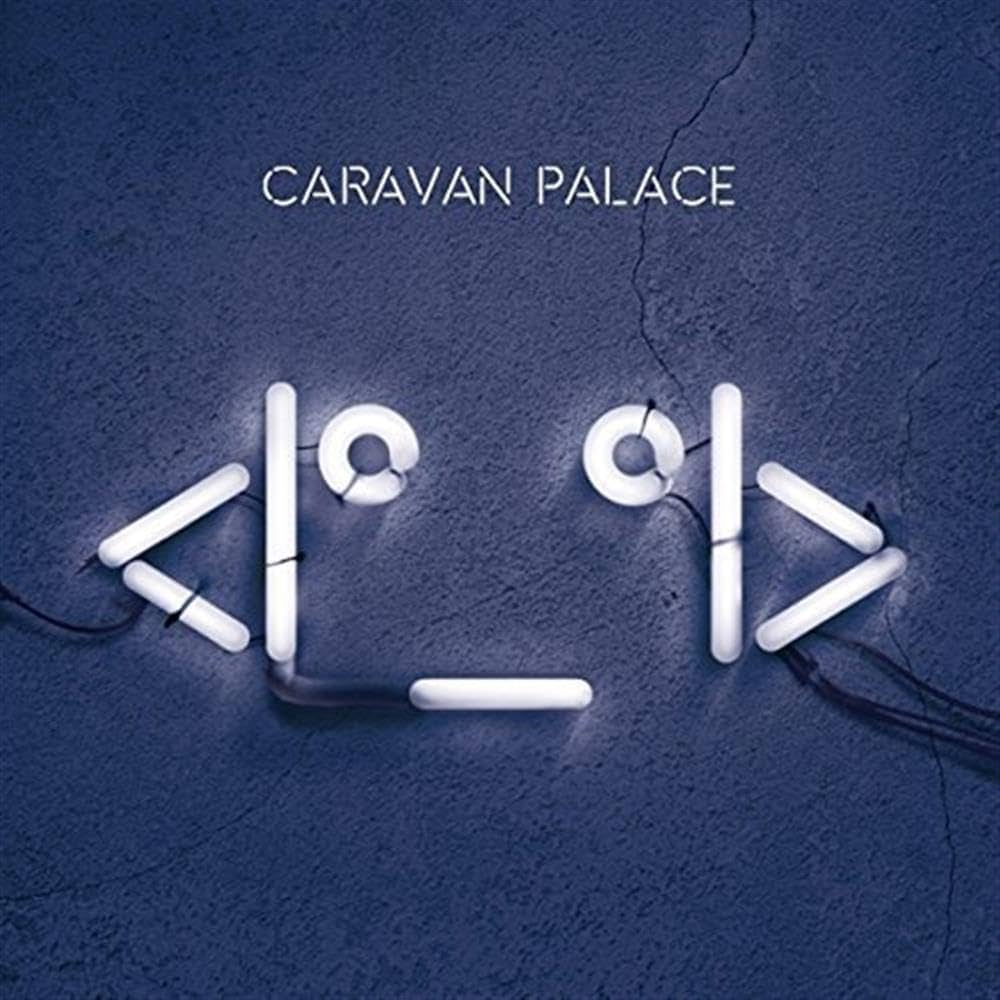
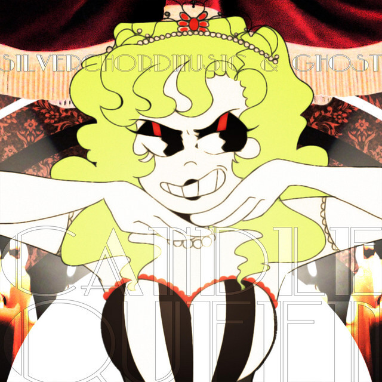

Best Music
Go back
- A day wouldn't feel right for me if I hadn't listened to at least one Caravan Palace song. I did get to see them live once, and they play the samples they use live!

- I also am a huge Vocaloid fan. One of my favorite Vocaloid producers is Ghost and Pals, for their dark themes and versatile aesthetics in each of their songs.

Go to top